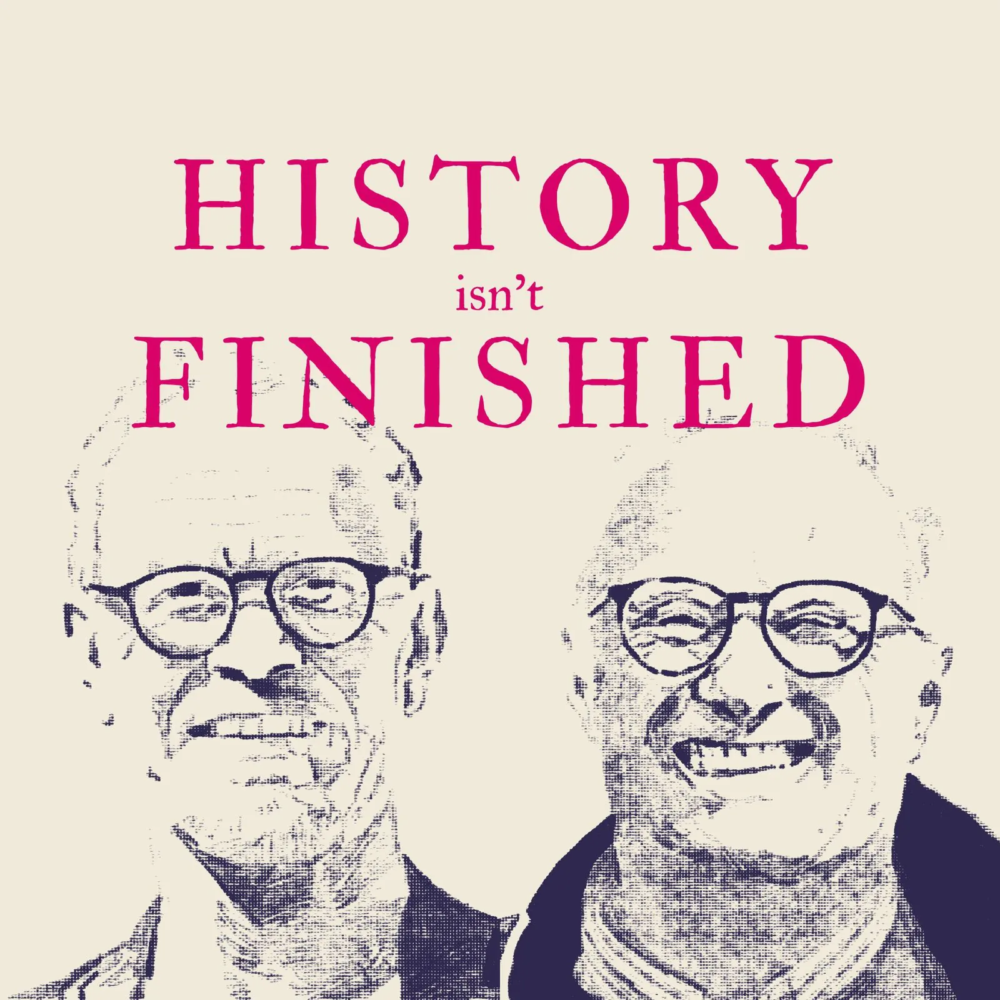
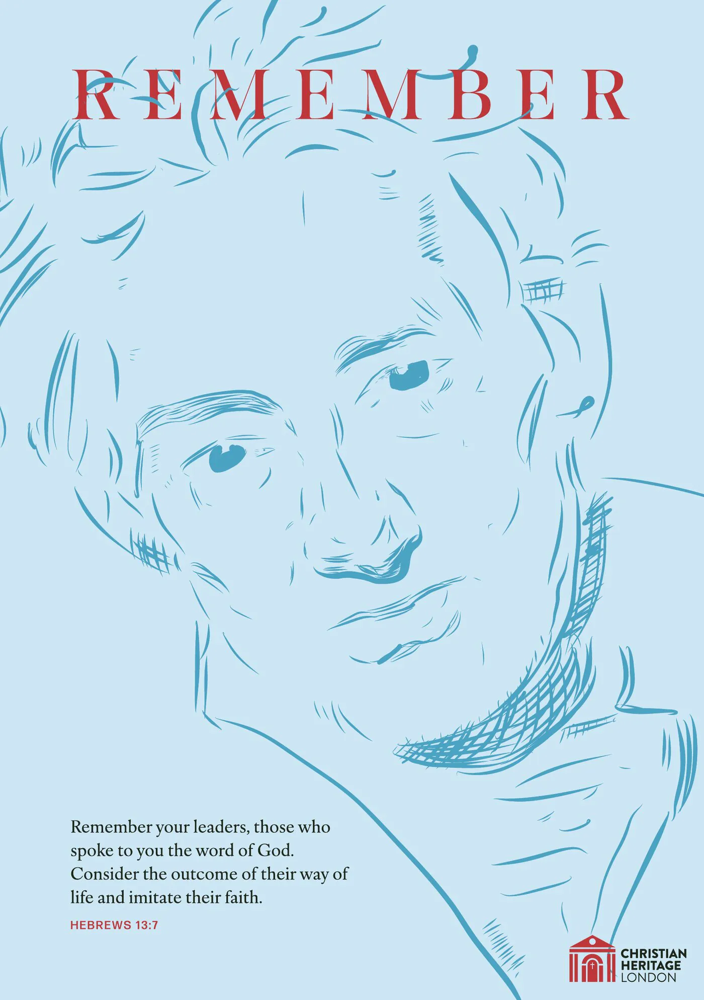
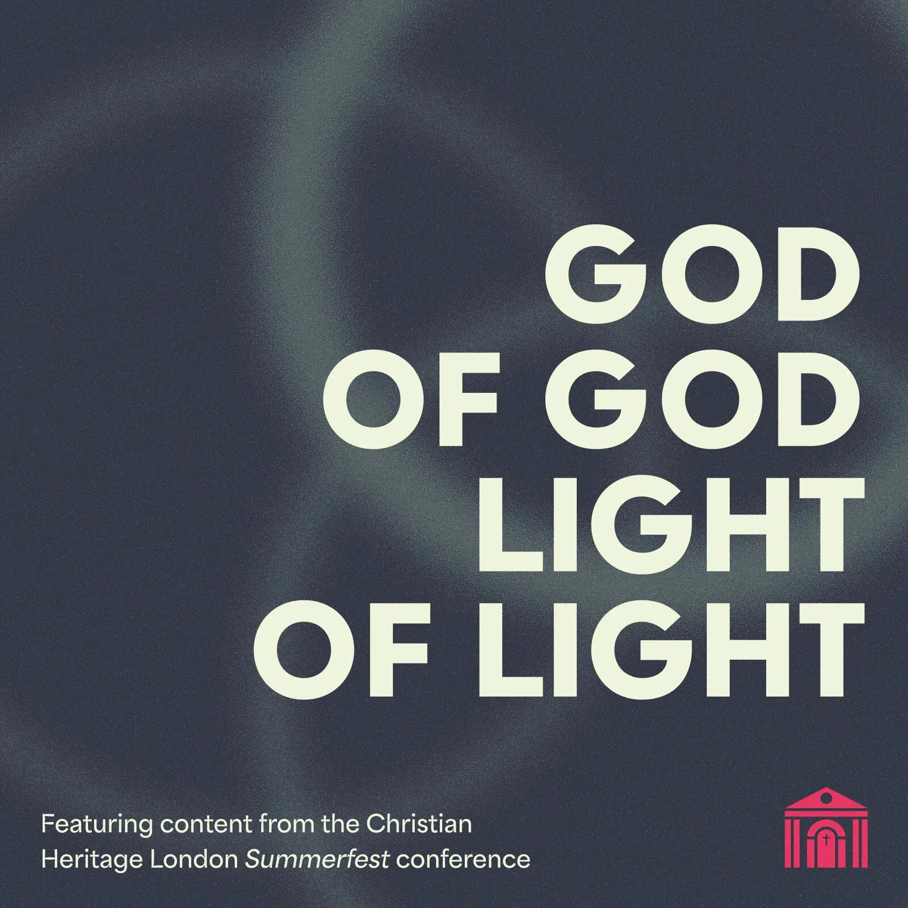
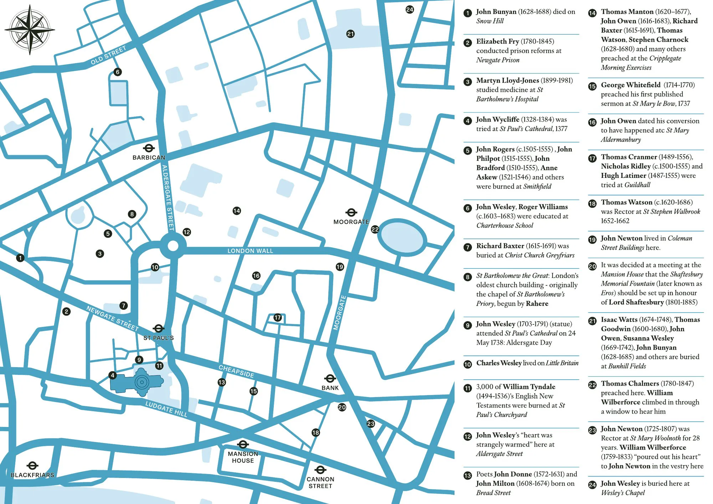
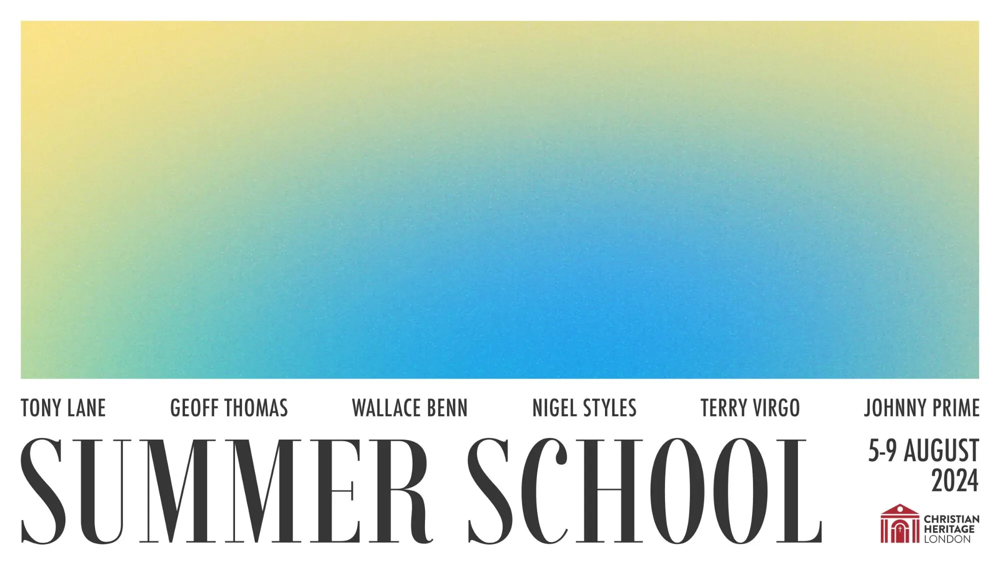

Christian Heritage London — artwork gallery
Six pieces: the History isn’t Finished and God of God podcast covers, the Remember poster and its 16:9 slide, the City walking map, and the Summer School banner. Mixed shapes (square, 16:9, A5 portrait, A4 landscape), so every option keeps each piece uncropped except C. The laptop and phone below stand in for the CHL belt as it is now.
A · Carry on down the belt Suggested
The art joins the end of the existing CHL belt, all at one height, the way Life Church Richmond already works. A small label marks the switch from screens to print. No new layout, no new code paths, no card growth. Cost: the art is past the phone, so it’s only seen by people who keep scrolling sideways (the pin does most of that for them on desktop).
Christian Heritage London
Print, podcast and event artwork






B · A second, shorter belt underneath
Website belt stays as it is; the art gets its own lower strip with a small heading. Visitors see there’s artwork without scrolling sideways, and the pieces sit smaller, like a contact sheet. Cost: the card grows by about 300px, and it’s a second sideways scroller to wire into the pin logic (or leave unpinned, swipe and trackpad only).
Christian Heritage London
Artwork
C · One bento tile in the belt
All six packed into a single tile, one slot in the belt, so the whole body of work reads at a glance. Poster runs full height on the left. Cost: pieces are cropped to fit the grid (the map loses its key, the wide ones lose their edges), and each piece is small. Works best as a teaser that opens a lightbox.
Christian Heritage London
D · A stack that deals itself
One square slot in the belt. The pieces cross-fade in turn every few seconds, each tipped a degree or two like prints on a table; dots underneath jump to any piece. Smallest footprint, every piece shown whole. Cost: only one piece visible at a time, and it’s more motion on a card that already has a video and a booking demo.
Christian Heritage London